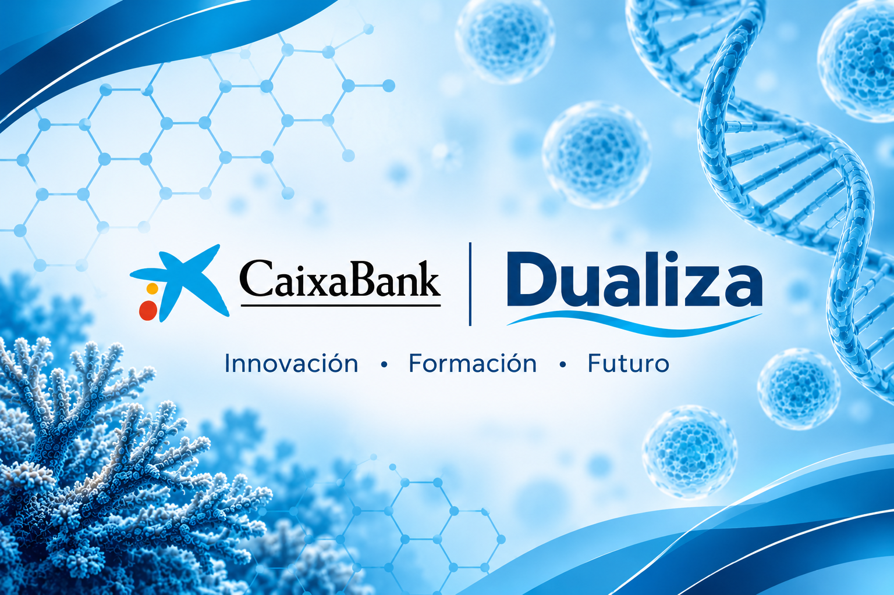
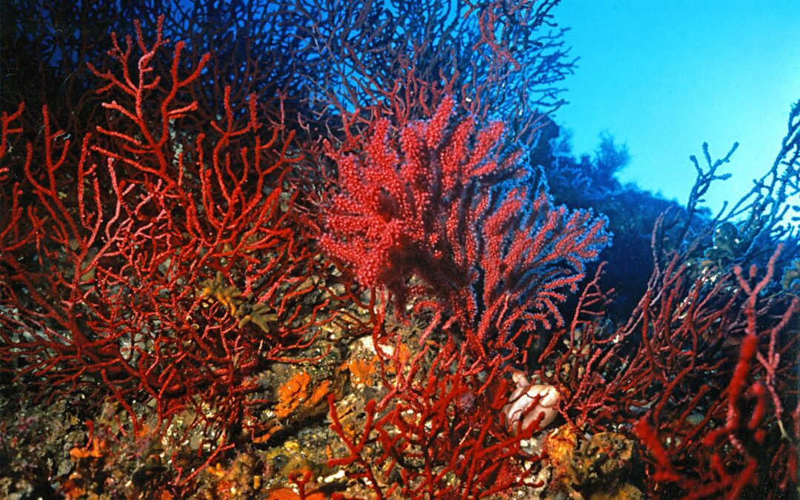

¿Qué es Dualiza?
La beca Dualiza es una convocatoria de ayudas organizada por CaixaBank Dualiza y la asociación de centros de Formación Profesional (FP Empresa). Está destinada a financiar proyectos innovadores de Formación Profesional desarrollados en colaboración entre centros educativos y empresas.

El camino hasta conseguir la beca
Conseguir esta oportunidad fue el resultado de varios intentos, mejoras y mucho trabajo. Nuestro recorrido comenzó en la VIII convocatoria y continuó hasta conseguir la aprobación en la IX.
VIII convocatoria · Curso 2024-2025
Durante el curso 2024-2025 presentamos por primera vez nuestro proyecto a la VIII convocatoria. La propuesta estaba centrada en investigar un microorganismo todavía no identificado que encontramos conviviendo en unas corales.
Sin embargo, el proyecto no fue seleccionado y no conseguimos la financiación necesaria para llevarlo a cabo. A pesar de ello, mantuvimos nuestro interés por desarrollar la investigación y seguimos trabajando en la idea.
IX convocatoria · Curso 2025-2026
Finalmente, en la IX convocatoria, correspondiente al curso 2025-2026, el Institut Puig Castellar, situado en Santa Coloma de Gramenet, consiguió la aprobación del proyecto.
Esta nueva oportunidad permitió poner en marcha la investigación y establecer una colaboración entre diferentes centros educativos:
- Institut Puig Castellar, en Santa Coloma de Gramenet.
- IES Sierra de Guara, en Huesca, Aragón.
- Institut Provençana, en L'Hospitalet de Llobregat.
Además, contamos con la colaboración de un científico del Museo de Historia Natural de Viena, en Austria.
Una colaboración para aprender e investigar
La participación de diferentes centros educativos y de un investigador científico permite enriquecer el proyecto, compartir conocimientos y acercar al alumnado al trabajo de investigación científica.
Gracias a esta colaboración podemos conocer distintas formas de trabajar, intercambiar experiencias y desarrollar nuestra investigación con el apoyo de profesionales del ámbito científico.
